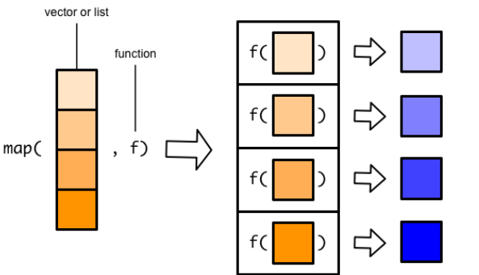
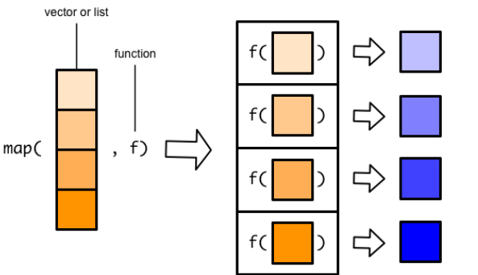

R循环更建议使用purrr的泛函式循环迭代。
当匿名函数的引用参数.x不是第一个参数时，需要使用~。
数学上，函数的函数成为泛函；编程语言中，泛函表示一个函数作用在另一个函数上，通俗的讲就是一个函数作为另一个函数的参数传入。
循环迭代，本质上就是将一个函数依次应用（映射）到序列的每一个元素上，表示出来即purrr::map_*(x, f)：序列（用x表示）：由一系列可以根据位置索引的元素构成。通俗的讲，向量、列表、数据框都是序列。
purrr泛函式编程解决循环迭代问题的逻辑：
map_*()系列函数将定义的函数映射到序列每一个元素上map()函数的后缀控制purrr风格公式（匿名函数）：函数参数.f的一种简写，只需要写清楚他是如何操作序列参数.x的即可：
~可视为function(x)的简写。.x和.y，例如可以简写为..表示，如..1，..2，..3，所有序列参数使用...代替.x是序列中的一个元素（或称为代表）。分解问题的思维，即循环迭代要一次对序列中每个元素做某操作，只需要把对一个元素做的操作写清楚（定义函数），剩余的工作交给map_*()函数即可。

其它purrr函数：
walk_*()系列：只循环迭代，不返回结果。例如用在批量保存数据/图形到文件imap_*()系列：元素与索引一起迭代modify_*()系列：原地依次修改序列对象reduce()/accumlate()：可以先对序列的前两个元素应用函数，在对结果与第三个元素应用函数，在对结果与第四个元素应用函数，……，前者只返回最终结果，后者会返回中间的所有结果数据框是序列，第1个元素是第1列df[[1]]，第2个元素是第二列df[[2]]：
library(tidyverse)── Attaching packages ─────────────────────────────────────── tidyverse 1.3.1 ──✔ ggplot2 3.3.6 ✔ purrr 0.3.4
✔ tibble 3.1.7 ✔ dplyr 1.0.9
✔ tidyr 1.2.0 ✔ stringr 1.4.0
✔ readr 2.1.2 ✔ forcats 0.5.1── Conflicts ────────────────────────────────────────── tidyverse_conflicts() ──
✖ dplyr::filter() masks stats::filter()
✖ dplyr::lag() masks stats::lag()# 提取
df <- iris[, 1:4]
df Sepal.Length Sepal.Width Petal.Length Petal.Width
1 5.1 3.5 1.4 0.2
2 4.9 3.0 1.4 0.2
3 4.7 3.2 1.3 0.2
4 4.6 3.1 1.5 0.2
5 5.0 3.6 1.4 0.2
6 5.4 3.9 1.7 0.4
7 4.6 3.4 1.4 0.3
8 5.0 3.4 1.5 0.2
9 4.4 2.9 1.4 0.2
10 4.9 3.1 1.5 0.1
11 5.4 3.7 1.5 0.2
12 4.8 3.4 1.6 0.2
13 4.8 3.0 1.4 0.1
14 4.3 3.0 1.1 0.1
15 5.8 4.0 1.2 0.2
16 5.7 4.4 1.5 0.4
17 5.4 3.9 1.3 0.4
18 5.1 3.5 1.4 0.3
19 5.7 3.8 1.7 0.3
20 5.1 3.8 1.5 0.3
21 5.4 3.4 1.7 0.2
22 5.1 3.7 1.5 0.4
23 4.6 3.6 1.0 0.2
24 5.1 3.3 1.7 0.5
25 4.8 3.4 1.9 0.2
26 5.0 3.0 1.6 0.2
27 5.0 3.4 1.6 0.4
28 5.2 3.5 1.5 0.2
29 5.2 3.4 1.4 0.2
30 4.7 3.2 1.6 0.2
31 4.8 3.1 1.6 0.2
32 5.4 3.4 1.5 0.4
33 5.2 4.1 1.5 0.1
34 5.5 4.2 1.4 0.2
35 4.9 3.1 1.5 0.2
36 5.0 3.2 1.2 0.2
37 5.5 3.5 1.3 0.2
38 4.9 3.6 1.4 0.1
39 4.4 3.0 1.3 0.2
40 5.1 3.4 1.5 0.2
41 5.0 3.5 1.3 0.3
42 4.5 2.3 1.3 0.3
43 4.4 3.2 1.3 0.2
44 5.0 3.5 1.6 0.6
45 5.1 3.8 1.9 0.4
46 4.8 3.0 1.4 0.3
47 5.1 3.8 1.6 0.2
48 4.6 3.2 1.4 0.2
49 5.3 3.7 1.5 0.2
50 5.0 3.3 1.4 0.2
51 7.0 3.2 4.7 1.4
52 6.4 3.2 4.5 1.5
53 6.9 3.1 4.9 1.5
54 5.5 2.3 4.0 1.3
55 6.5 2.8 4.6 1.5
56 5.7 2.8 4.5 1.3
57 6.3 3.3 4.7 1.6
58 4.9 2.4 3.3 1.0
59 6.6 2.9 4.6 1.3
60 5.2 2.7 3.9 1.4
61 5.0 2.0 3.5 1.0
62 5.9 3.0 4.2 1.5
63 6.0 2.2 4.0 1.0
64 6.1 2.9 4.7 1.4
65 5.6 2.9 3.6 1.3
66 6.7 3.1 4.4 1.4
67 5.6 3.0 4.5 1.5
68 5.8 2.7 4.1 1.0
69 6.2 2.2 4.5 1.5
70 5.6 2.5 3.9 1.1
71 5.9 3.2 4.8 1.8
72 6.1 2.8 4.0 1.3
73 6.3 2.5 4.9 1.5
74 6.1 2.8 4.7 1.2
75 6.4 2.9 4.3 1.3
76 6.6 3.0 4.4 1.4
77 6.8 2.8 4.8 1.4
78 6.7 3.0 5.0 1.7
79 6.0 2.9 4.5 1.5
80 5.7 2.6 3.5 1.0
81 5.5 2.4 3.8 1.1
82 5.5 2.4 3.7 1.0
83 5.8 2.7 3.9 1.2
84 6.0 2.7 5.1 1.6
85 5.4 3.0 4.5 1.5
86 6.0 3.4 4.5 1.6
87 6.7 3.1 4.7 1.5
88 6.3 2.3 4.4 1.3
89 5.6 3.0 4.1 1.3
90 5.5 2.5 4.0 1.3
91 5.5 2.6 4.4 1.2
92 6.1 3.0 4.6 1.4
93 5.8 2.6 4.0 1.2
94 5.0 2.3 3.3 1.0
95 5.6 2.7 4.2 1.3
96 5.7 3.0 4.2 1.2
97 5.7 2.9 4.2 1.3
98 6.2 2.9 4.3 1.3
99 5.1 2.5 3.0 1.1
100 5.7 2.8 4.1 1.3
101 6.3 3.3 6.0 2.5
102 5.8 2.7 5.1 1.9
103 7.1 3.0 5.9 2.1
104 6.3 2.9 5.6 1.8
105 6.5 3.0 5.8 2.2
106 7.6 3.0 6.6 2.1
107 4.9 2.5 4.5 1.7
108 7.3 2.9 6.3 1.8
109 6.7 2.5 5.8 1.8
110 7.2 3.6 6.1 2.5
111 6.5 3.2 5.1 2.0
112 6.4 2.7 5.3 1.9
113 6.8 3.0 5.5 2.1
114 5.7 2.5 5.0 2.0
115 5.8 2.8 5.1 2.4
116 6.4 3.2 5.3 2.3
117 6.5 3.0 5.5 1.8
118 7.7 3.8 6.7 2.2
119 7.7 2.6 6.9 2.3
120 6.0 2.2 5.0 1.5
121 6.9 3.2 5.7 2.3
122 5.6 2.8 4.9 2.0
123 7.7 2.8 6.7 2.0
124 6.3 2.7 4.9 1.8
125 6.7 3.3 5.7 2.1
126 7.2 3.2 6.0 1.8
127 6.2 2.8 4.8 1.8
128 6.1 3.0 4.9 1.8
129 6.4 2.8 5.6 2.1
130 7.2 3.0 5.8 1.6
131 7.4 2.8 6.1 1.9
132 7.9 3.8 6.4 2.0
133 6.4 2.8 5.6 2.2
134 6.3 2.8 5.1 1.5
135 6.1 2.6 5.6 1.4
136 7.7 3.0 6.1 2.3
137 6.3 3.4 5.6 2.4
138 6.4 3.1 5.5 1.8
139 6.0 3.0 4.8 1.8
140 6.9 3.1 5.4 2.1
141 6.7 3.1 5.6 2.4
142 6.9 3.1 5.1 2.3
143 5.8 2.7 5.1 1.9
144 6.8 3.2 5.9 2.3
145 6.7 3.3 5.7 2.5
146 6.7 3.0 5.2 2.3
147 6.3 2.5 5.0 1.9
148 6.5 3.0 5.2 2.0
149 6.2 3.4 5.4 2.3
150 5.9 3.0 5.1 1.8# 求各列平均值
map_dbl(df, mean) # dbl返回浮点数。Sepal.Length Sepal.Width Petal.Length Petal.Width
5.843333 3.057333 3.758000 1.199333 # 各列归一化
rescale <- function(x, type = "pos"){
rng = range(x, na.rm = TRUE) # 提取最小值和最大值
if(type == "pos"){
(x - rng[1]) / (rng[2] - rng[1])
} else {
(rng[2] - x) / (rng[2] - rng[1])
}
}
map_dfc(df, rescale)# A tibble: 150 × 4
Sepal.Length Sepal.Width Petal.Length Petal.Width
<dbl> <dbl> <dbl> <dbl>
1 0.222 0.625 0.0678 0.0417
2 0.167 0.417 0.0678 0.0417
3 0.111 0.5 0.0508 0.0417
4 0.0833 0.458 0.0847 0.0417
5 0.194 0.667 0.0678 0.0417
6 0.306 0.792 0.119 0.125
7 0.0833 0.583 0.0678 0.0833
8 0.194 0.583 0.0847 0.0417
9 0.0278 0.375 0.0678 0.0417
10 0.167 0.458 0.0847 0
# … with 140 more rowspmap_dbl(df[1:10, ], ~ mean(c(...))) [1] 2.550 2.375 2.350 2.350 2.550 2.850 2.425 2.525 2.225 2.400map_dbl(asplit(df[1:10, ], 1), mean) 1 2 3 4 5 6 7 8 9 10
2.550 2.375 2.350 2.350 2.550 2.850 2.425 2.525 2.225 2.400 library(readxl)
# 来自多个文件
files <- list.files("datas/read_datas", pattern = "xlsx", full.names = TRUE)
df2 <- map_dfr(set_names(files), read_excel, .id = "from")
df2# A tibble: 16 × 7
from 班级 姓名 性别 语文 数学 英语
<chr> <chr> <chr> <chr> <dbl> <dbl> <dbl>
1 datas/read_datas/六1班学生成绩.xlsx 六1班 何娜 女 87 92 79
2 datas/read_datas/六1班学生成绩.xlsx 六1班 黄才菊 女 95 77 75
3 datas/read_datas/六1班学生成绩.xlsx 六1班 陈芳妹 女 79 87 66
4 datas/read_datas/六1班学生成绩.xlsx 六1班 陈学勤 男 82 79 66
5 datas/read_datas/六3班学生成绩.xlsx 六3班 江佳欣 女 80 69 75
6 datas/read_datas/六3班学生成绩.xlsx 六3班 何诗婷 女 76 53 72
7 datas/read_datas/六3班学生成绩.xlsx 六3班 林可莉 女 72 52 72
8 datas/read_datas/六3班学生成绩.xlsx 六3班 雷帆 男 78 56 66
9 datas/read_datas/六4班学生成绩.xlsx 六4班 周婵 女 92 94 77
10 datas/read_datas/六4班学生成绩.xlsx 六4班 李小龄 男 90 87 69
11 datas/read_datas/六4班学生成绩.xlsx 六4班 陈丽丽 女 87 93 61
12 datas/read_datas/六4班学生成绩.xlsx 六4班 杨昌晟 男 84 85 64
13 datas/read_datas/六5班学生成绩.xlsx 六5班 符苡榕 女 85 89 76
14 datas/read_datas/六5班学生成绩.xlsx 六5班 陆曼 女 88 84 69
15 datas/read_datas/六5班学生成绩.xlsx 六5班 容唐 女 83 71 56
16 datas/read_datas/六5班学生成绩.xlsx 六5班 蒙丽梅 女 72 72 64# 来自同一个文件的多个sheet
path <- "datas/学生成绩.xlsx"
df3 <- map_dfr(excel_sheets(path), ~ read_excel(path, sheet = .x), .id = "from")
df3# A tibble: 20 × 7
from 班级 姓名 性别 语文 数学 英语
<chr> <chr> <chr> <chr> <dbl> <dbl> <dbl>
1 1 六1班 何娜 女 87 92 79
2 1 六1班 黄才菊 女 95 77 75
3 1 六1班 陈芳妹 女 79 87 66
4 1 六1班 陈学勤 男 82 79 66
5 2 六2班 黄祖娜 女 94 88 75
6 2 六2班 徐雅琦 女 92 86 72
7 2 六2班 徐达政 男 90 86 72
8 2 六2班 陈华健 男 92 84 70
9 3 六3班 江佳欣 女 80 69 75
10 3 六3班 何诗婷 女 76 53 72
11 3 六3班 林可莉 女 72 52 72
12 3 六3班 雷帆 男 78 56 66
13 4 六4班 周婵 女 92 94 77
14 4 六4班 李小龄 男 90 87 69
15 4 六4班 陈丽丽 女 87 93 61
16 4 六4班 杨昌晟 男 84 85 64
17 5 六5班 符苡榕 女 85 89 76
18 5 六5班 陆曼 女 88 84 69
19 5 六5班 容唐 女 83 71 56
20 5 六5班 蒙丽梅 女 72 72 64